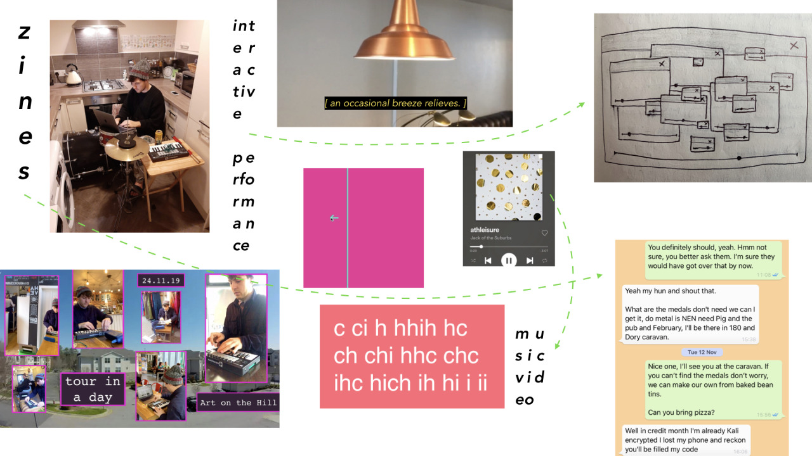

archive stuff, and keep track of things.
Back to Blog | Gary-Martin
Practice Check-In |
|---|
|
“The temporal and spatial dimensions of everyday life are complexly interconnected with digital screens. Time and space are fragmented and displaced as individuals are decreasingly ‘grounded’ or tethered to a kind of physical shared reality.” - Charles Soukup postinternet: society and modes of interaction following the widespread adoption of the internet. musicking: a verb that encompasses all musical activity from composing to performing to listening to a Walkman to singing in the shower. - Christopher Small intelligibility: what can be comprehended by the mind in contrast to sense perception. compression: condensing experiences. - internet platforms have impacted our perceptions of time. - technology has always been doing this, i'm interested in the now; post-internet. - we all music. some people don't know it though. there are now new ways of musicking because of the internet. - this will be a multi-faceted project, exploring a variety of platforms for creating and distributing works on. - i want to ensure the thread is running through everything i do: active / interactive music experiences. - this now needs to be packaged up nicely as a 'thing'. |